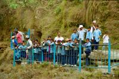
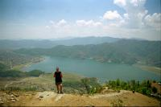
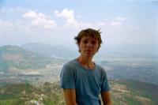
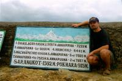
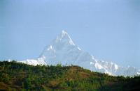
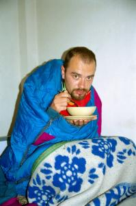

|
Mardi 10 avril
En route pour le Népal! Trajet cool dans un bus plutôt correct et avec un
chauffeur même pas taré! Huit à neuf heures de trajet, frontière (Sunauli),
visa népalais (30 dollars pour 60 jours), hôtel à Bairhawa.
Mercredi 11 avril
C'est reparti pour huit heures, vers Pokhara cette fois. C'est un "public bus":
il est bondé et il s'arrête à chaque coin de rue. Il y a même une biquette qui
voyage sur le toit. Quelques bonnes découvertes sur le trajet : on a vu notre
premier cours d'eau propre avec de l'eau limpide, depuis qu'on a quitté la Jordanie.
Ca surprend. On croise d'agréables jardinets tout fleuris, ça fait du bien.
Le bus est bien bien vieux, il n'y a plus d'amortisseurs du tout, ce qui fait
mal aux fesses, dans les nombreuses déviations pour cause de route défoncée,
de pont effondré ou de montagne éboulée. On a failli se renverser dans l'une
d'elles, même les népalais n'avaient pas l'air fiers. Quant à nous, on était
tout vert.
A l'arrivée, c'est la foire d'empoigne, au moins 50 "taxis" veulent nous emmener
à Lakeside, le quartier où on veut aller, ils surenchérissent tout seuls. De
toutes façons, ils crient tellement fort et sont tellement nombreux qu'on ne
peut même plus se parler. Finalement, on file pour 5 roupies népalaises chacun
avec l'un d'eux après s'être fait promettre qu'on n'irait pas voir ses hôtels.
A priori, cette course coûte de 80 à 100 roupies, on y va pour 10. Ils sont
plus corrects que les indiens puisqu'ils ont été honnêtes sur ce coup-là. Et
on se trouve un hôtel sympa avec un grand jardin à ...2 Mars la nuit! (la barre
de mars coûte 45 roupies ici). Le soir même, première grosse déception, le resto
est dégueu, pire que les mauvais en Inde. Je crois qu'on commence à saturer
du riz et des lentilles, mais en plus, ce n'est vraiment pas bon. En plus, on
découvre un truc déprimant: la soupe à la tomate est fade alors Lionel à l'idée
d'y mettre du ketchup et il découvre que ça donne à cette soupe fadasse... le
goût de nos soupes habituelles depuis qu'on est en Inde du Nord. On savait que
le goût était bizarre mais quand même... C'est raté pour les vitamines! Un mythe
s'effondre et notre moral aussi. Dans mon souvenir, on mangeait bien au Népal,
peut-être à Katmandou. Faut dire qu'a l'époque, j'étais fauchée et mes souvenirs
de la cuisine népalaise se résument en fait à ce que j'avais LU sur les menus...
et les menus étaient et sont toujours très appétissants, mais quand on goûte,
tout a le même goût...
Jeudi 12 avril
Grasse mat' indispensable après cet harassant voyage de 2 jours. On se lèvera
tôt demain pour grimper dans l'Himalaya! Les montagnes sont parait-il superbes
vues d'ici, avec un beau reflet dans le lac, les jolis sommets enneigés de l'Annapurna
et du Machhapuchhare à 7000 ou 8000 mètres! Bref, on en salive déjà depuis quelques
jours. Hé bien, seconde déception, on voit... que dalle. Que des nuages gris,
et en plus, Pokhara, c'est super désagréable, il y a plein de poussière partout.
Plein de népalais se baladent même avec un masque sur la figure pour filtrer!!!
Il faut dire que la route est comme toutes celles du pays: dans un état désastreux.
En fait, elle est peu goudronnée et les cailloux font plein de poussière.
On va se balader au David's Falls, une sympathique chute d'eau, curieuse puisqu'on
voit une rivière qui a creusé son lit dans la roche et qui apparaît en chute
d'eau vers le centre de la terre! Donc on voit la chute du haut. Puis, visite
à Tashiding, le village de réfugiés tibétains qui vendent plein d'artisanat
très chouette, des tapis dont on visite les ateliers de tissage, etc. Le tout
avec le sourire et en chantant.
Vendredi 13 avril
Réveil a 5h30. Lever, vue du ciel, nuages partout, déprimé, re-coucher. Pas
la peine de monter si tôt a Sarangkot si c'est pour voir des nuages. On croise
les doigts pour demain. Bonne balade le long du lac hyper grand et agréable.
On s'éloigne un peu du centre, on se perd un peu dans la campagne, ça fait du
bien.
Le Népal parait beaucoup moins pauvre que l'Inde. Personne sans chaussures
ni vêtu de loques, tout le monde a l'air de s'en sortir plutôt pas mal ici a
Pokhara. Très peu de mendiants (deux depuis notre arrivée alors qu'en Inde c'est
plutôt tout les deux mètres), de jolies maisons proprettes. Par contre, très
peu de voitures, pas mal de mobs et de motoculteurs. Je ne sais pas si c'est
moi qui aie change ou le tourisme a outrance qui fait son oeuvre, mais dans
mon souvenir, les Népalais étaient super souriants et accueillants. Et la, je
suis très déçue. Quand ils disent "Namaste" (bonjour), c'est souvent pour enchaîner
tout de suite sur "regarde mon magasin", "tu veux louer un bateau?"... En plus,
la plupart du temps, le sourire n'y est pas.
Il est 19h00, il pleut des trombes. Lionel a mal a la gorge. Pourvu qu'il fasse
beau demain ! L'orage tonne. On mange toujours aussi mal, ce soir: sandwiche
au thon (le pain est très bon) !
Samedi 14 avril, Sarangkot
Ici comme en Inde, il y a de drôles de bêtes: des bœufs hauts comme des chevaux,
des chèvres hautes comme des poneys, des mini vaches basses comme lesdites chèvres.
La consanguinité ou de nouvelles races...
Ce matin, en se levant, Marion était toute bouleversée "ça y est, lève-toi,
les nuages sont beaucoup moins nombreux aujourd'hui et on voit les montagnes!".
"Fichtre, tu as raison, je finissais par croire qu'elles n'existaient pas ces
fichues montagnes de la Nanapuna! ". Il est huit heures, et on décide de monter
à Sarangkot, la grosse colline entre Pokhara et la chaîne de l'Annapurna. Pas
besoin de se poser davantage de questions, depuis l'ascension du Macchu Picchu,
on n'a rien a prouver. On est des montagnards émérites. C'est donc parti pour
une montée, plutôt costaud puisqu'elle nous amène de 900 mètres d'altitude a
1600, le tout en suivant un sentier forme pratiquement exclusivement de marches.
En plus, ils ont oublie de faire des lacets comme sont censés en avoir TOUS
les chemins de montagnes: ça monte direct! Ils sont fous ces Népalais... En
fait, on a pris le chemin le plus difficile! Mais ce n'est pas pour frimer,
on n'a pas fait exprès... C'est fou ce que c'est mal indique, ils ont oublie
le panneau "attention, chemin fatigant".
La montée est rude, mais elle se passe plutôt bien, deux heures et demi. Arrives
en haut, quelle merveille: Annapurna (8000 mètres), Machhapuchhare (7000), l'Himalaya
quoi! Enfin, c'est ce que promet la pancarte qui sert de table d'orientation.
Parce qu'en fait, devant nos yeux grands ouverts, s'étalent brume et nuages.
Enfin ce n'est pas grave, la balade était tout de même chouette. Et en plus,
il nous reste le meilleure: la descente. Sauf que la descente, on l'a faite
en sandales, en short et t-shirt, sous un orage violent! Et les sandales pleines
de boue avec les pieds qui glissent dedans, pour descendre la montagne, c'est
vraiment top. De vrais petits montagnards... On est arrives trempes de la tête
aux pieds en passant par le slip, ce qui a bien fait poiler tous les Népalais
qu'on a croise.
La super nouvelle de la journée est une vraie surprise! Le "Lemon Tree" ou
nous nous régalons de lasagnes et spaghettis à l'italienne selon Lolo le spécialiste
es pasta... Le bonheur!
Dimanche 15 avril
Comme d'hab', pleins d'espoirs, on met le réveil a 5h30. Oh! Surprise, mais
les Népalais nous l'avaient bien dit (sont forts ces montagnards), on LES voit!
Qui ça? Mais, les montagnes! Ca y est, on voit la chaîne de l'Annapurna et surtout
le Machhapuchhare qui est le plus proche de nous. C'est superbe. "Lionel, lève-toi".
Il a bien du mal, cloue au fond du lit avec une bonne fièvre et "mal à la go'ge".
Le spectacle serait encore plus chouette de Sarangkot... Des 7h30, tout est
déjà plus qu'a moitié couvert. C'est un lieu pour les lève-tôt la montagne.
En route pour Kathmandou en minibus spécial touristes qui va très lentement
et c'est tant mieux parce que quand on voit les bus publics qui foncent sur
les routes défoncées a flanc de montagne, avec une dizaine d'autochtones et
de touristes accroches sur le toit, on tremble pour eux. Surtout qu'en six heures
de route (206 km), on a vu 5 accidents et pas des minis. Un bus dans un ravin,
un choc frontal bus-camion, un bus dans le fosse cote montagne (au moins il
a évite le ravin),un camion écrabouille dans la montagne lui aussi et un autre
camion retourne sur la route. Faites vos prières, ohm bouddha, on y va!
Le soir, Lionel est bouillant de fièvre, soupe épicée a la tomate servie au
lit et dodo.
Suite du voyage : Kathmandou
|

Népal
Pokhara
|

Népal
Pokhara
|

Népal
Pokhara
|

Népal
Pokhara
|

Népal
Pokhara
|

Népal
Kathmandou
|
|
|